Настройка БДКГ-204
- Приклеить наклейку с номером на верхнюю (ближе к сцинтиллятору) часть платы устройства обработки в свободном от контактных дорожек поле
- Приклеить на торец колпачка стикер с указанием номера блока и его адреса (например: 959/12, где 959 – номер блока, 12 – адрес)
- В электронный перечень записать внутренний номер (1), поставить "+" в графе "Дата отгрузки" (2), дату настройки (3) и ФИО (4).
- Подключение БДКГ-204 к ПК производится с помощью адаптера USB-RS485 (Titan USB-COMi-SI-M, MOXA UPort1150 с внешним питанием или адаптер USB-БД RS485)
- Работа с БДКГ-204 осуществляется с помощью программы SARKtech
- Записать [1] соответствующий стикеру адрес [2] БДКГ-204 (в большинстве случаев он должен быть уникальным, с 1 по 31)
- Перейти на вкладку "Управление"
- Пароль для входа на одну вкладку – текущее время (к примеру 1145).
- Пароль для входа на текущую сессию (покуда открыта программа) – текущее время + пробел + 5555 (к примеру 1145_5555)»
-
Нажать кнопку «Статус» в правой части вкладки. При нормальной работе блока в «канал 1:» всех статусов должно быть ‘0’.
При подключении БДКГ-204 после калибровки в «канал 1» для статуса «общий» можно увидеть ошибку «сброс времени интегрирования» - это означает,
что блок откалиброван и автоматически устанавливает рабочее время интегрирования равное 5.
Далее описаны функции кнопок для записи настроек (выделенные жирным шрифтом):- «Дата (запись)…» - записывает текущие дату и время (взятые с настроек ПК) в блок. Возможно их изменение перед записью.»
- «Время инт.(запись)…» - записывает время интегрирования БДКГ-204. Для настройки и калибровки установить значение равное 6. Для работы в составе СРК-АТ2327 или как отдельного интеллектуального блока используется значение равное 5 (устанавливается автоматически после прохождения калибровки).
- «Пороги (запись)…» - записывает пороговые значения мощности дозы в нЗв/ч, при достижении которых срабатывает (включается сигнал логического “0”) на линиях WL (work level - рабочий порог) и DL (danger level - аварийный порог). Используются для подачи сигналов для УС-АТ991 напрямую, миную обмен данными по RS485. По умолчанию записываются рабочий порог равный 500 нЗв/ч, аварийный – 1000 нЗв/ч (=1мкЗв/ч). После записи порогов проверить их работоспособность с помощью специальной коробки (для подключения, где распаяны светодиоды по линиям WL и DL) и кнопок «Контроль…» расположенных внизу каждого порога.
 Обязательно после контроля прочитать записанные пороги и удостовериться в соответствии их с заданными.
Обязательно после контроля прочитать записанные пороги и удостовериться в соответствии их с заданными. - «Ид.данные (запись)…» - записывает идентификационные данные БДКГ-204 такие, как внутренний номер (присваивается УРИиР), номер поставки (он же номер СРК-АТ2327 слева от точки) и серийный номер (номер устройства в составе СРК-АТ2327 справа от точки). Для дальнейшей работы присвоить блоку внутренний номер с стикера или наклейки на плате устройства обработки.
- «Упр. (запись)…» - установка настроек работы блока таких, как включение или выключение счётчика (неактуально), установка определённого диапазона вручную или автовыбор диапазона и др. В основной работе с БДКГ-204 не используется.
- «Коэф. (запись)…» - записывает калибровочные коэффициенты в зависимости от выбранного диапазона. Для калибровки доступны два коэффициента (мёртвое время и коэффициент) в каждом из трёх диапазонов.
Начальные коэффициенты
Если меняются основополагающие элементы (светодиод или ФЭУ) или просто требуется заново перенастроить прибор, то желательно установить "нулевые" коэффициенты, а именно:
Мёртвое время Коэффициент Собственный фон 1-ый диапазон 1e-07 45 0 2-ой диапазон 1e-06 50 0 3-ий диапазон -1e-06 25 0 - «Скорость (запись)…» - записывает скорость обмена БД по линии RS485. По умолчанию установлена 9600. Изменений не требуется.
- «Сброс истории» - сбрасывает накопленные истории (10-минутные и превышения порогов).
- «Выключение» - переводит БДКГ-204 в спящим режим. Дальнейший обмен данными прекращается до полного пересброса питания.».
- Проконтролировать ток потребления ≈ 80 мА
- Подключить блоки к питанию на стеллажах для приработки на время не менее 4 суток (100ч)
- После прохождения приработки приступить к настройке БДКГ-204. Для настройки понадобиться два источника: 137Cs с активностью 105 Бк и 109Cd с активностью не менее 2 * 104 Бк. Перед настройкой снять колпачок с блока.
- Заполнить базу настройки в соответствии с требуемыми параметрами:
- В 1-ом диапазоне – проверить работоспособность светодиодной стабилизации.
- В 1-ом и 2-ом диапазонах – проверить частоту раскачки 16 кГц на выходе платы тока (гнездо 15U).
- В 2-ом и 3-ем диапазонах – проверить корректность распайка проводов с блока ФЭУ и светодиода, в крайнем случае – целостность самого ФЭУ
- Установить резисторами R7 и R8 на плате преобразователя напряжения Uвыс (посредством тока светодиода) по показаниям от источника 137Cs:
увеличение номинала резистора R7 уменьшает показания от источника и наоборот. Номер источника (с его активностью на текущий день) и полученные показания записать в таблицу настроек
Ошибка загрузки
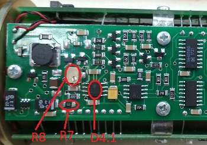
- Установить Uпорог на резисторе R23 равным 10мВ и зафиксировать показания прибора
по 109Cd (и его активность на текущий день) в базу настроек
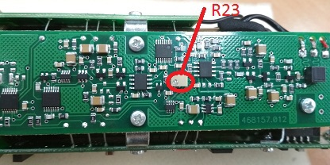
- Перепроверить показания по 137Cs.
- Зафиксировать напряжение на резисторе R8 в базу настроек
- Зафиксировать в базу настроек напряжение на выводе 1 операционного усилителя D4.1 на плате преобразователя напряжения в 1-ом диапазоне (удобнее это делать на катоде диодной сборки VD5, GND от C5, C6). При хорошем свето-выходе (в первую очередь от светодиода, в последнюю от ФЭУ) напряжение на выходе D4.1 (вывод 1) должно быть выше напряжения на входе (вывод 3, резистор R8). В обратном случае проверить в первую очередь отсутствие загрязнения на окнах светодиода и сцинтиллятора
- Проконтролировать отсутствие показаний во 2-ом и 3-ем диапазонах. Зафиксировать в базу настроек номинал резистора R13 на плате тока
- Зафиксировать в базу настроек напряжение на выводе 1 операционного усилителя D4.1 на плате преобразователя напряжения в 3-ем диапазоне
- Проконтролировать форму пробоя светодиода в 1-ом и 3-ем диапазонах: максимальная амплитуда светодиода не должна превышать 100В и обязательно должен присутствовать горб (1) и длинный «спад» (2). Зафиксировать максимальные значения напряжения пробоя в базу настроек
-
Зафиксировать в базу настроек напряжение Uвыс в 1-ом и 3-ем диапазонах на площадках 13F и 14F платы преобразователя напряжения.
Напряжение в 3-ем диапазоне должно находится в пределах
(Uрассч-0,8) < Uвыс < UрассчUрассч – расчётное напряжение Uвыс для 3-его диапазона на основании измеренного в 1-ом. Регулировка Uвыс в 3-ем диапазоне осуществляется двумя способами:
- 1. Уменьшением тока (оно же света) светодиода с помощью резистора R24 (не более 8В на выходе D4.1).
- 2. Увеличением длительности (оно же номинала) раскачки Uвыс с помощью резистора R27 (не более 1,2 Мом).
- Отдать БД на линейку для калибровки и проверки энергетической зависимости (109Cd, 241Am, 60Co)
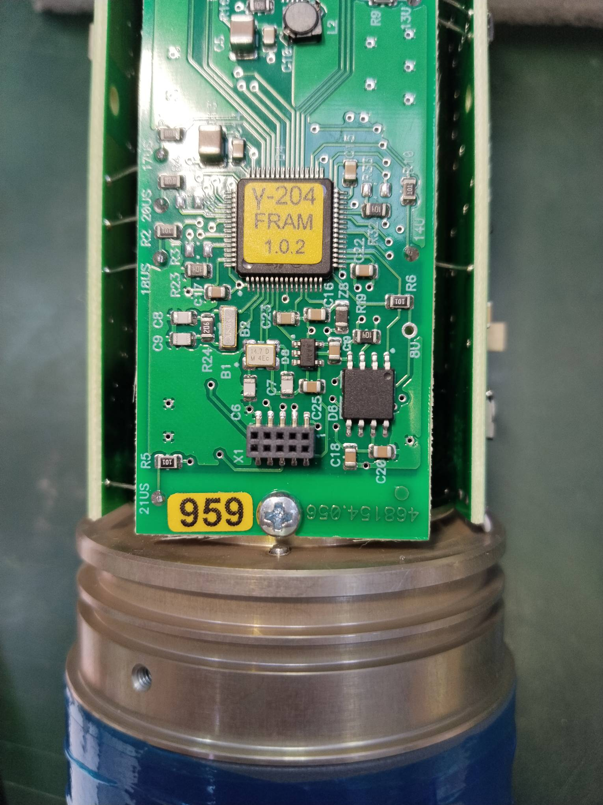
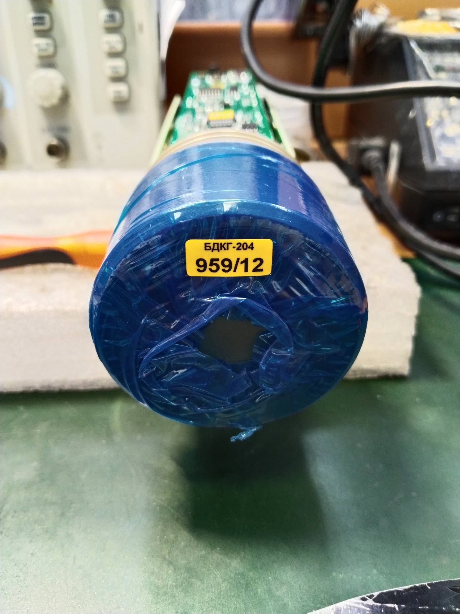
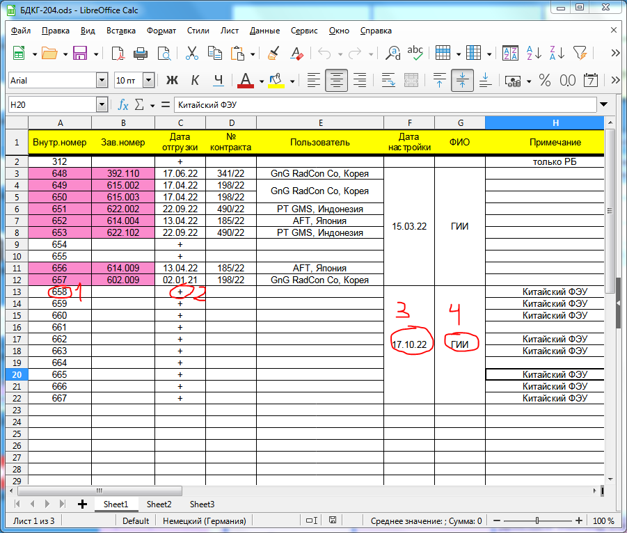
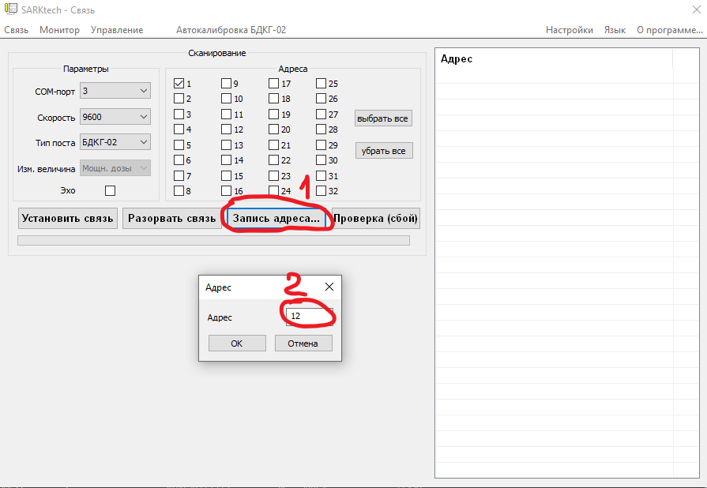
-
После записи каждого типа данных желательно проверить корректность сохранённых данных нажатием соответствующей кнопки с надписью (чтение)
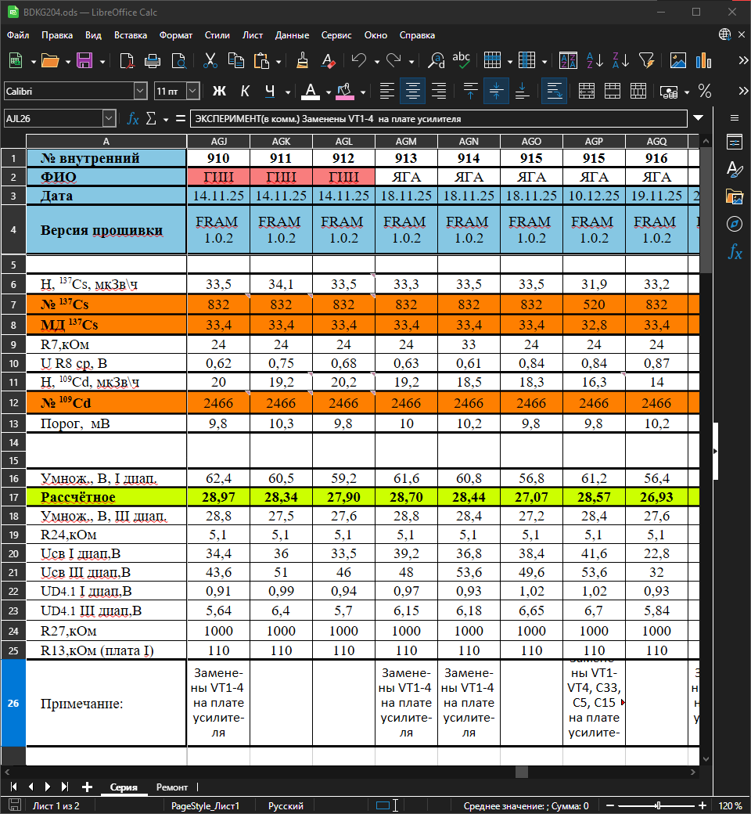
Превышение показаний на фоне
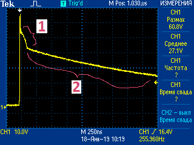
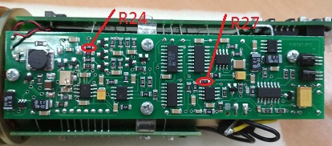
ПОСЛЕ ЛИНЕЙКИ 1
- Проконтролировать градуировочные точки во всех диапазонах и процент энергетической зависимости в журнале градуировок БДКГ-204
- Если у БДКГ-204 какие-либо точки вышли за пределы границ допускаемой относительной погрешности (20%) или очень близко к ней (~10%):
- для 1-го или всех диапазонов – перепроверить настройку БД.
- для 3-го диапазона при проблемах в конце диапазона – либо отрегулировать общую скорость счёта (в том числе и для 2-го диапазона) резистором R13 на плате тока (уменьшение номинала уменьшает начало счёта во 2-ом и 3-ем диапазонах) либо отрегулировать светодиодную стабилизацию в 3-ем диапазоне (яркость светодиода и Uвыс)
- Отдать БД на сборку стаканов и заливку светодиода
- Отдать собранные БД на линейку для перепроверки градуировочных точек и энергетической зависимости
- Проверить БД на герметичность и зафиксировать показания давлений в таблицу герметичности. После успешного прохождения наклеить круглую наклейку "ГЕРМЕТИЧНО HERMETICALLY SEALED +" сбоку корпуса напротив места для наклейки
- Проверить на тряску взяв из партии 4 прибора (из расчёта на 20-30 штук)
- Подготовить БД к работе в СРК
- При поставке БДКГ-204 как отдельного (или интеллектуального) блока детектирования убедиться в отсутствии ошибок БД (в SARKtech, во вкладке «Управление», кнопка «Статус»). При наличии в заказе кабеля или переходника ОБЯЗАТЕЛЬНО подключить БДКГ-204 с помощью поставочного кабеля к SARKtech для проверки работоспособности всего узла
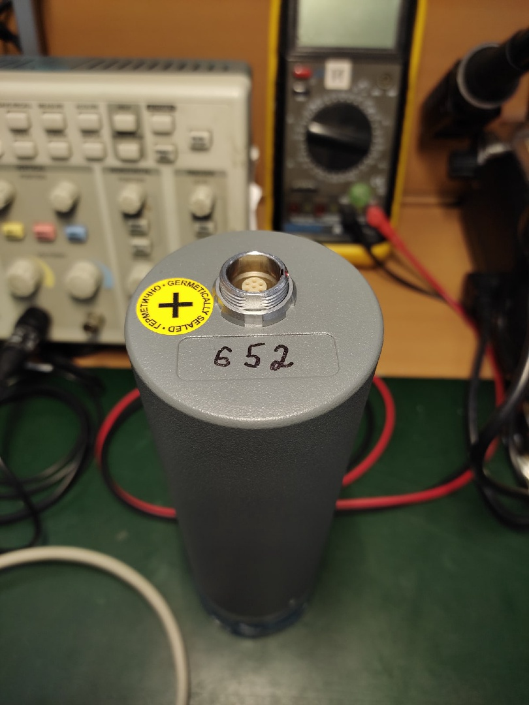
БДКГ-204 с протоколом MODBUS
- Перепрошить блок на прошивку с обменом по протоколу MODBUS (Fileserver\Manufacture\Uchastok.RIR\programming\SRK\BDKG-204_MODBUS). Блок потребуется разобрать. Перепрошить блок на прошивку с обменом по протоколу MODBUS. У БД потребуется снять корпус
- Перепроверить блок на герметичность. Перепроверка на линейке НЕ требуется.
- Запустить "DU_Utility". Если это первый запуск, то для начала потребуется скопировать файл в
формате DU_Utility_name.txt (Текстовый документ), где name - требуемый блок (в нашем случае это
204),
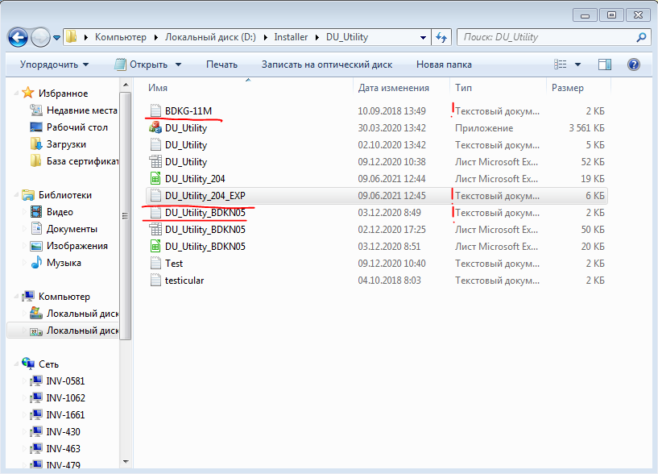
по пути C:\ProgramData\ATOMTEX\DU_Utility.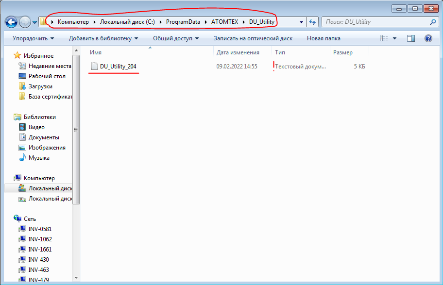
- Установить преднастройки обмена (порт, скорость, чётность, адрес), установить флажок CRC16 (MB)
и выбрать текстовый файл требуемого блока. После нажать кнопку "Установить соединение".
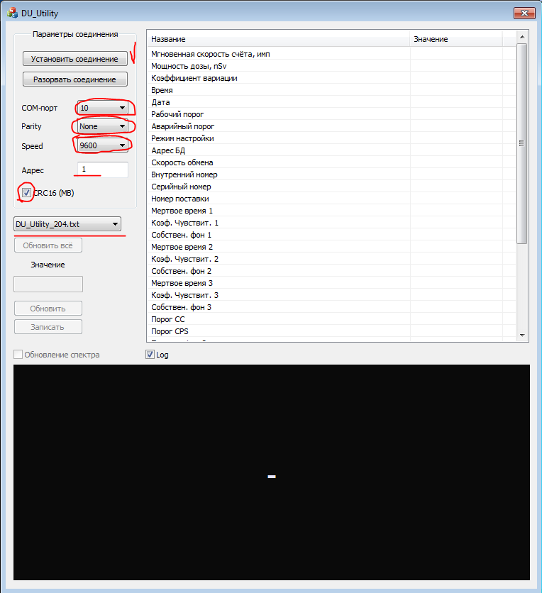
- В окне справа появится список команд. Для полного доступа к изменению всех команд требуется
выбрать (нажать на) команду "Режим настройки" и слева, в поле "Значение", прописать "1" и нажать
на кнопку "Записать". Нажать кнопку "Обновить всё".
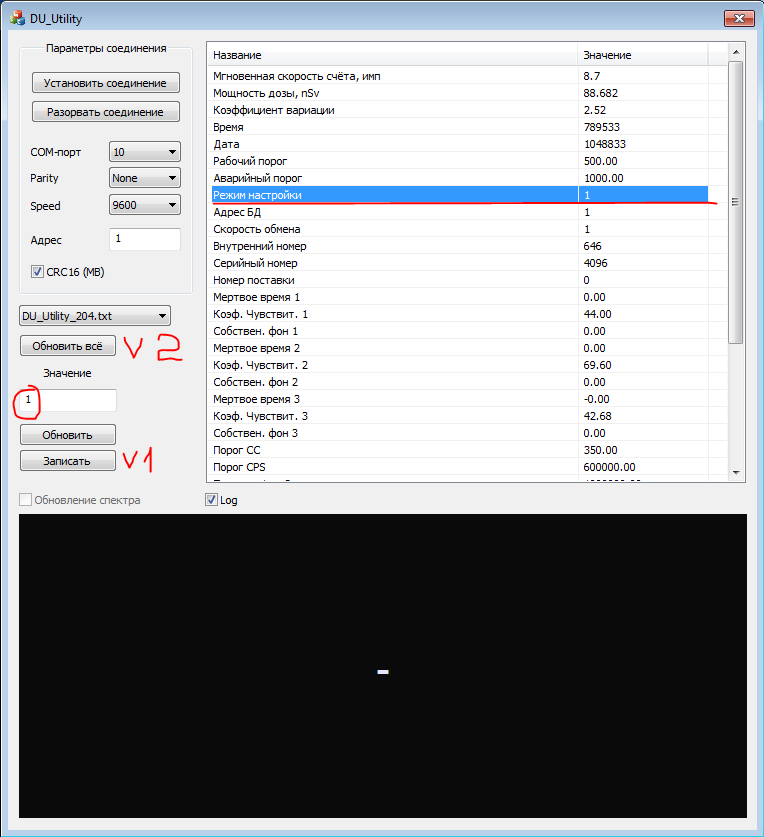
- "Обновить всё" обновляет все команды;
- "Обновить" - только ту команду, которая выбрана;
- "Записать" - записать значение в поле "Значение" в выбранную команду.
- Проверить записанные данные БД:
- Коэффициенты мёртвого времени и чувствительности для всех диапазонов.
- Порог СС – 700+ (для ФЭУ CR125).
- Рабочий и аварийный пороги.
- Адрес БД и скорость обмена (=1).
- Номера (внутренний, серийный и номер поставки